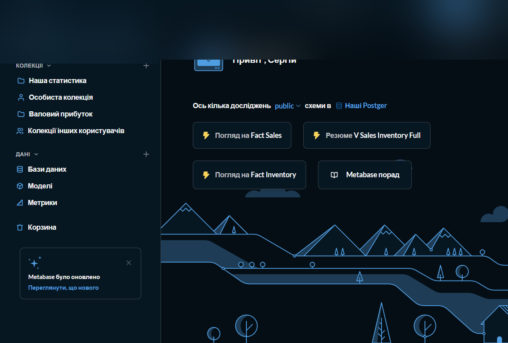
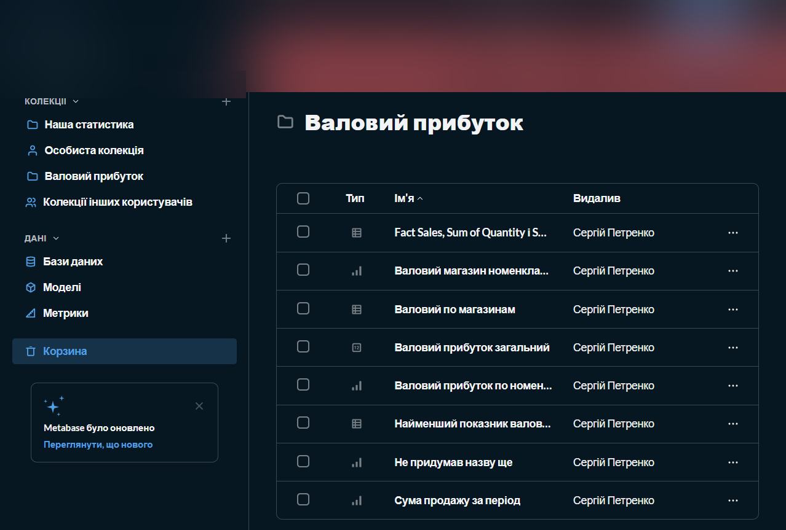
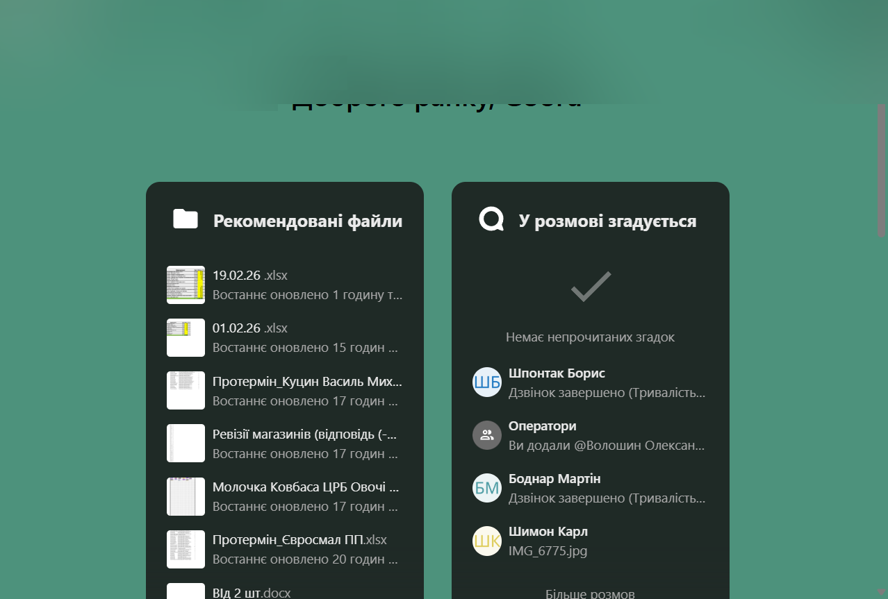
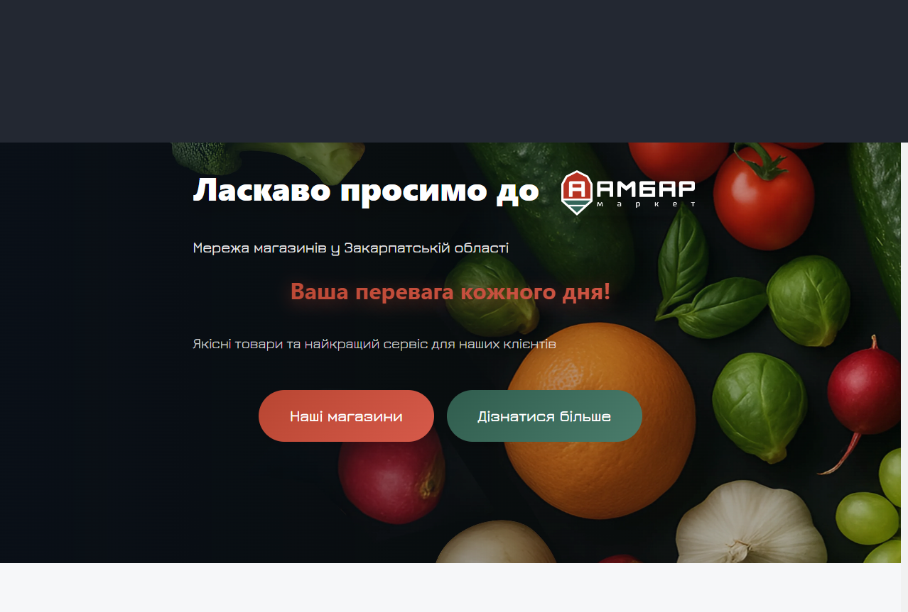
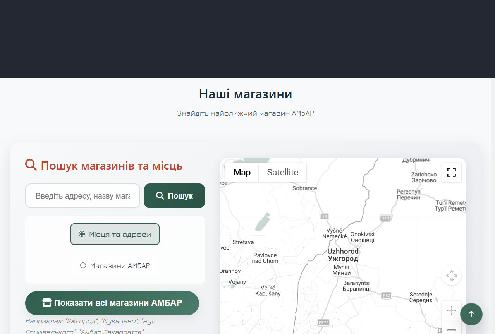

Full production loop for retail: Telegram/API → Docker → admin → monitoring → docs. I ship production AI (OpenAI, function calling, OCR) on real data — no model-made-up prices or stock. I know store ops from the floor — so I automate what actually hurts.
Problem: official notification channels for a retail chain — branded senders, not grey-route numbers.
Built: registered an official SMS sender and a separate official Viber sender for the retail network; set up and ran campaigns via TurboSMS — alpha names / sender IDs, templates, production mailings.
BI + cloud + corporate site
MetabaseNextcloudPHPHetzner
Problem: sales/inventory analytics, team file cloud, and public retail site.
Built: ETL → PostgreSQL → Metabase/PostgREST; Nextcloud + OnlyOffice; store locator (Maps) + CMS. VPS deploy and monitoring.

Metabase

Gross profit

Nextcloud

Corporate site

Store map
Skills
How I ship systems
Backend
Python FastAPI · Node Express / Prisma · PHP · PostgreSQL / MySQL / SQLite · REST API
Frontend / Mobile
React / TypeScript / Vite / Tailwind / Next · vanilla JS · Android Compose
AI
OpenAI API · function calling / tool use · OCR / vision · KB & prompts · fact-grounded answers · document & dialog automation in production